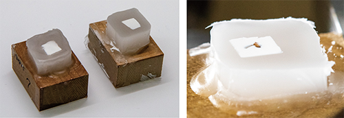
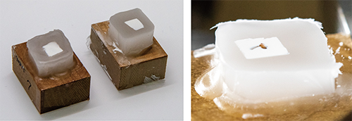
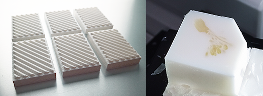

Paraffin block/パラフィンブロック
Overview
- Fix specimens as usual.
- Stain with 1% tannic acid in PBS for 1 hr, or overnight. This step improve the contrast of blockface image in some specimens.
- Wash well in PBS and stored in PBS 4C. To store for a longer period, add sucrose in PBS to inhibit change in color of tannic acid. Without sucrose, tannic acid become darker.
-
There is two methods to opacifiy paraffin:
- White agarose pre-embedding method
 
 - White paraffin method including use of white base 
See Sci Rep (2021)11:13108, Fig.4 and Suppl. Fig. S4 for detail. Opacification greatly improves the quality of surface rendered images. White paraffin is suitable for larger specimens (>5 mm), and white agarose for smaller specimens (<3 mm).
- White agarose pre-embedding method
-
Dehydrate using graded series of EtOH and xylene/xylene substitute.
- Embed in paraffin as usual.
- いつもどおり、標本を固定する。
- 1%タンニン酸/PBSで1時間または一晩染色する。このステップは、標本のブロックフェイス画像のコントラストを向上させます。効果の程度は標本よって異なります。
- PBSでよく洗い、PBS 4度で保存する。もし、長期間保存する場合は、タンニン酸の変色を抑えるためにPBSにスクロースを加えておくとよい。スクロースがないとタンニン酸の色はどんどん濃くなります。
-
パラフィンを不透明にするには2つの方法がある。
- 白パラフィン法
- 白アガロース前包埋法
詳しくはSci Rep 2021 図4 補足図4をご覧ください。不透明化を行うことで、サーフェスレンダリング画像の品質が大幅に向上します。白パラフィン法は大きめの標本（5 mm以上）に、白アガロースは小さめの標本（3 mm以下）におすすめです。
-
EtOHとキシレン/キシレン代替品を使用して脱水する。
- 通常通り、パラフィンに包埋します。
White agarose pre-embedding method
This method is based on Ushida et al, Pathology Int. 2018. doi:10.1111/pin.12652. I just modified the procedure to opacify using white watercolor.
Prepare reagents and devices for making white agarose
-
Sol.A 5% fish gelatin in DW (5ml DW warm up to 37'C, 0.25 g fish gelatin_Sigma G7041, 15-ml tube, Rotator) Add watercolor paste 0.25-0.5 g/1 ml of 5% fish gelatin Aliquot 1 ml, and store at -30’C
-
Sol.B 0.5% Agarose in DW (100 ml DW, 0.5 g agarose_Nacalai 02468-66, microwave) Store at r.t. as usual. This Nacalai’s agarose has regular melting point around 36’C, and is not a low melting temp type 26-30 ‘C. LM type are used in the original paper Pathololy Int. 2018. doi:10.1111/pin.12652.
-
Heat-plate, set at 40’C.
Pre-embed specimens in white-agarose
-
Mix Sol.A : Sol.B (1 ml : 4 ml) on the heat-plate. Final concentration is 1% gelatin and 0.4% agarose.
-
Pore gelatin/agarose solution into self-made molds.
-
Put pre-warmed tissues into gelatin/agarose.
-
Cool to 4’C, for more than 30 min.
-
Remove gel blocks from molds, carefully since gel blocks are very soft and fragile. Let the gel/specimen blocks fall into the fixative solution, never pinch them.
-
Fix with 4% PFA in 0.1M phosphate buffer, overnight. (1-hour per 1-mm depth)
-
Gel blocks become harder enough to be handled. Wash in PBS.
Dehydrate specimens embedded in white agarose
Dehydration were performed manually. You can modify overnight steps as you like.
-
50% 1 hr, 70% 1 hr (possible for 2-3 days), 90% overnight (store for very long period.)
-
100% EtOH 1 hr or 2hrs, 3 times.
-
100% EtOH, overnight.
-
100%EtOH:PathoClean, 1:1, 1 hr (PathoClean is xylene-substitute, Fujifilm-Wako)
-
PathoClean 1 hr or 2 hrs, 3 times. (It is said that xylene harden tissues, and avoid overnight. I don’t know the case of PathoClean.)
-
Paraffin at !!! 60’C !!!, overnight. (McCormick Scientific PARAPLAST PLUS 502004) Higher temp like as 70C melt agarose block.
-
Paraffin again, 1 hr or more.
-
Cooling on crash ice bath. (Be careful not to raise the temperature too high.)
White paraffin method
White paraffin and white bed keep the margins of blockface (area around specimen) in white. If you are not accessible to 3D printer, try/use only white paraffin. After preparation of these items, the procedure for embedding is the same as usual.
Preparation
- Prepare specimens as usual, including fixation and dehydration
- Prepare white paraffin
- add white crayon (Crayola, Easton PA, USA) to paraffin at a concentration of 6.25% w/w
- melted at 60 °C to mix
- Make the white bed with white filament using 3D printer.
- STL file is available at GitHub, CoMBI-sliding-microtome.
- The white bed contributes to keeping the margins of blockface white during the entire sectioning process.
Procedure
- Incubate specimens within white paraffin at 60 °C
- Chill to make paraffin blocks
- Attach blocks on white bed.